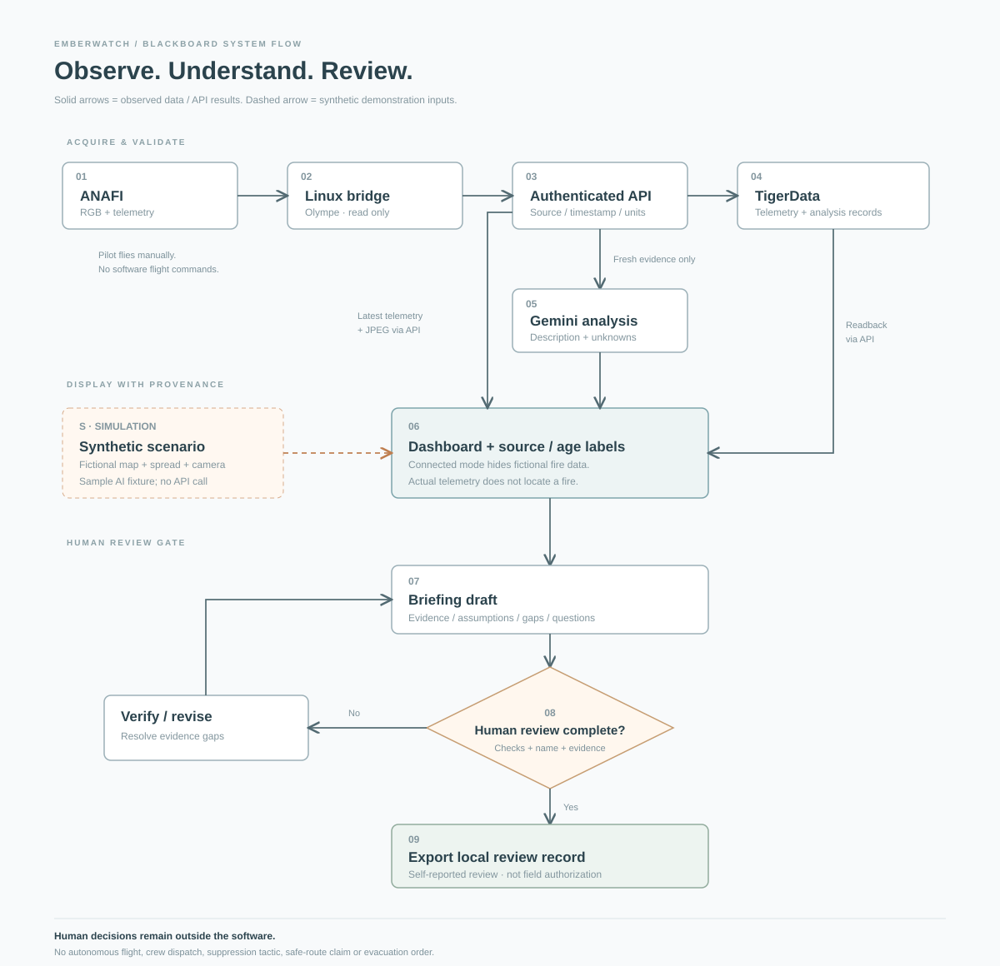

HACKATHON DELIVERY PACKAGE / 16 OCTOBER 2026
One shared picture.
A human decision.
A formal execution plan and usable source for a 36-hour, four-person Parrot ANAFI wildfire-monitoring exercise. One developer arrives at H4.
Early hardware and service gates; a complete offline simulation survives integration failures.
Parallel ownership, a defined late-arrival handoff, rest coverage and a protected release window.
Evidence and questions, named local review and export. No autonomous firefighting or flight commands.
Use your browser's Print command to save or print this guide. The dashboard is an exercise prototype. The spread illustration is not validated, and the fictional map is not for navigation. Full editable source is supplied with the downloadable project package.
Emberwatch — formal 36-hour execution plan
Team: four developers, A/B/C present at H0, D arrives H4. Clock: elapsed hackathon hours; H0 is event kickoff. Outcome: a reliable, explainable monitoring demo, an animated spread illustration, and a human-reviewed incident briefing workflow. Prepared 16 October 2026.
1. Delivery agreement
The baseline is the supplied working simulation and source. A pilot may manually fly an ANAFI in an approved test setting and return observations to the computer. Flight permission, airspace coordination, operating limits and go/no-go decisions remain with the responsible pilot and event organizers. A live wildfire flight is outside this hackathon plan.
Must have by H24: largest dashboard section is a light road-style map with animated illustrative spread; playback and scenario input; clearly labeled simulated camera and telemetry fallback; source/age labels; sample Gemini analysis or authenticated live API response; TigerData integration interface; incident personnel; briefing questions, unknowns, review checklist and export. All must work from a clean checkout without keys in Simulation.
Live stretch targets, gated early: actual ANAFI telemetry, actual low-rate RGB JPEG snapshots, one structured Gemini response, one TigerData persisted observation + readback. These are separately reported; a configured service is not called verified until a real round trip succeeds.
Cut from the 36-hour scope: autonomous flight, automated suppression or evacuation advice, multi-drone control, trained fire detection, thermal claims from RGB, geolocated perimeter extraction, a validated fire forecast, production identity, dispatch, continuous WebRTC streaming, real Google Maps credentials/tiles, and operational routing. The fictional schematic provides the requested light map aesthetic without a map service dependency.
2. Ownership and capacity
| Developer | Accountable workstream | First four hours | Handoff / backup |
|---|---|---|---|
| A — integration & dashboard lead | UI shell, map, interactions, provenance modes, integration review, final build | Start offline dashboard immediately; publish contracts with B; prepare D's handoff | D can modify simulation; B owns release while A rests |
| B — backend & TigerData | API, tokens/CORS, schema, persistence, status, integration tests | Freeze JSON v1 with A/C; start memory API and schema independently | A can run backend and replay tests |
| C — ANAFI & media / QA | Linux bridge, hardware capability check, manual test capture, snapshots, hardware limitations, demo evidence | Identify exact ANAFI variant, firmware, controller, Linux host; read-only connection spike | B can run ingest; C switches to QA if hardware gate fails |
| D — AI & briefing / simulation (arrives H4) | Gemini adapter, evidence limits, planning workflow, guide + pitch, scenario validation | Absent; no early task depends on D | A prepares a one-page H4 handoff; B backs up API integration |
Raw availability is 140 person-hours (3×36 + 32). Reserve four hours of rest per person, leaving 124 person-hours before meals and coordination. Target 100 hours of planned work, with the remaining 24 for meals, handoffs, integration failures and release buffer. No milestone depends on four people being active simultaneously.
Rest windows: A H16–20, B H20–24, C H24–28, D H28–32. No physical flight during fatigue-sensitive periods; C and the responsible pilot stop hardware work when conditions or alertness are unsuitable. These are planning allocations, not a requirement to work continuously.
3. Parallel execution schedule
| Window | A — dashboard / integration | B — API / data | C — hardware / QA | D — AI / briefing |
|---|---|---|---|---|
| H0–1 | Set acceptance checklist; run prototype; agree design | Freeze emberwatch.v1; create token setup |
Inventory hardware and Linux host; verify exact variant | Arrives H4; no dependency |
| H1–4 | Road map, timeline, scenario controls; draft handoff | Memory ingest/read/status; TigerData schema; API tests | Read-only SDK spike, battery/GPS sample, camera feasibility; hardware gate | Absent |
| H4–8 | Wire telemetry modes; no synthetic/live blending | Integrate C's ingest; create TigerData service or mark memory-only | Capture test telemetry; attempt JPEG snapshots; camera gate | 20-minute handoff; Gemini structured adapter + fixtures; briefing draft structure |
| H8–12 | Complete responsive layout, map controls, empty/error states | Persist real observation + readback; TLS and auth checks; database gate | Validate snapshot display and timestamp; prepare recording fallback | One live Gemini round trip if keys; evidence limits, refusal on missing data; AI gate |
| H12–16 | Connect complete user journey and export | End-to-end integration, stale data behavior, recovery | Device/network drop test; provenance review | Human checklist, named review, stale-draft behavior, incident roles |
| H16–20 | Rest; handoff release runbook to B | Integrate branches; tests, packaging; cover release | Browser QA, telemetry/sample-age checks | Scenarios, briefing copy, guide; fill UI bugs with B |
| H20–24 | Final visual pass; scope freeze; own release | Rest; A covers server runbook | Mobile/desktop acceptance; record backup demo | Finish plan, diagram and pitch; review content boundaries |
| H24–28 | Fix release blockers only; assemble source/artifacts | Test from clean checkout; secrets and schema review | Rest; hardware remains off unless separate qualified coverage | Rehearsal 1, identify failed claims, edit evidence labels |
| H28–32 | Stabilize release; check final dashboard | Reproducible startup, persistence evidence; offline test | Rehearsal 2, video backup, hardware demo only if ready | Rest; A follows pitch notes |
| H32–34 | Full team: one timed demo; triage only blockers | Verify final package and API configuration | Confirm charged equipment or use recorded/synthetic fallback | Final pitch, judge questions, attribution and limitations |
| H34–36 | Freeze source, zip and checksums; launch final dashboard | Keep reproducible offline copy | Stage laptop, recording and equipment | Submit artifact links; present; no feature additions |
4. Work packages and dependencies
| ID | Owner | Deliverable and acceptance | Prerequisite | Budget |
|---|---|---|---|---|
| W1 | A + B | v1 fields, provenance, units, routes, errors; all agree on same sample | None | 4 person-hours |
| W2 | A | Offline map, animation, timeline, scenario inputs, responsive camera/panels | W1 field names; mock source independent | 18 |
| W3 | B | Token-separated API, validation, status, read/ingest, tests | W1 | 12 |
| W4 | C | Linux observation bridge and connection evidence or documented fallback | Exact hardware + Linux available | 10 |
| W5 | B | TigerData schema, verified TLS, real insert/readback or truthful memory mode | W3; service credentials | 7 |
| W6 | D | Gemini structured adapter, validated response, fixture and timeout/error UI | W1; live test needs fresh W4 data and API key | 10 |
| W7 | D + A | Briefing objectives, evidence gaps, checklist, named review, stale inputs + export | W2; independent of live Gemini | 10 |
| W8 | C + A | Integration, desktop/mobile, auth, stale feed, mode-switch, offline checks | W2/W3/W7; W4–6 as available | 15 |
| W9 | D + all | Plan, blackboard flow, source package, evidence table, 3-minute pitch, backup recording | Stable baseline | 14 |
| Buffer | All | Rest/food handoffs and unexpected fixes use unallocated capacity | — | 24 available after above 100 |
Critical path: W1 → W2 + W3 in parallel → W7 → W8 → W9 release. W4/W5/W6 connect through explicit interfaces and timeouts; they cannot block the offline baseline. No work is assigned to D before H4. A writes D's handoff by H3: repository commands, API sample, chosen Gemini fields, current mode rules, assigned issues and fallback cutoffs.
5. Milestones and decision gates
| Deadline | Responsible | Exit evidence | Fallback decision |
|---|---|---|---|
| H1 | A/B | Contract agreed, source starts on laptop | Keep browser-local baseline |
| H4 | C/A | Exact model + Linux host known; real state received or clear failure | Cap further hardware setup at one additional bounded attempt; C then switches to replay/QA |
| H8 | C/B | At least one real frame with captured-at time or explicit camera unavailability | Use low-rate JPEG instead of continuous stream; otherwise synthetic camera labeled in every view |
| H12 | B/D | Real DB insert/readback; real Gemini response logged separately | Memory only / sample fixture labels; no pretend connections |
| H18 | B | Complete click path through scenario → draft → review → export | Trim decorative controls before required behavior |
| H24 | A | Must-have acceptance passes; feature freeze | Cut unverified integrations from live presentation |
| H30 | A/C | Cold start and offline demo succeed; no leaked keys | Use local static copy and recorded proof of earlier hardware test |
| H34 | All | One timed rehearsal; source and artifacts frozen | No dependency updates or new features |
| H36 | D/A | Submit dashboard, guide, source zip and verification matrix | Present exact verified scope |
6. Contingency playbook
| Trigger | Action / owner | What judges see |
|---|---|---|
| Wrong controller, incompatible host or failed Olympe connection at H4 | C documents exact failure and switches to test evidence + QA; A preserves simulation | Synthetic feed with persistent label; physical integration remains source-only |
| Network cannot reach drone and Internet simultaneously | C keeps drone bridge on Linux; use a second authorized interface or relay only after testing; otherwise run locally and replay | No claim that cloud analysis is live |
| RTSP cannot render in browser | C uses supplied JPEG bridge at ~0.5 fps; do not spend sprint building WebRTC | Snapshot timestamp and explicit low-rate label |
| TigerData quota/network/schema issue by H12 | B keeps explicit ephemeral memory mode; SQL + adapter remain supplied | “Memory only,” no false persistence badge |
| Gemini missing key, timeout, 429 or malformed output | D shows failure; demo mode uses labeled deterministic fixture | No fabricated API response; human briefing workflow still works |
| Telemetry older than 10 seconds | A marks telemetry stale; at 30 seconds backend refuses analysis on that evidence | Age and source remain visible |
| Snapshot older than 10 seconds | A marks image stale; at 30 seconds do not send it as fresh Gemini evidence | Last-capture time; no fake stream status |
| Bad payload or wrong token | B rejects ingest; no database write or UI substitution | Last known sample age increases |
| Model output includes unsupported inference | D treats as unverified; keep response planner deterministic; reviewer checks evidence | Evidence gaps and scope limit alongside analysis |
| Unexpected teammate absence after H4 | A prioritizes W2/W3/W7/W9; B covers release; C/D share QA | Coherent baseline and accurate feature matrix |
| Deployment unavailable | A opens dist/index.html or local server; D uses recorded 3-minute demo |
Full offline interactions and downloadable source |
7. Acceptance and release checklist
- Open from a clean checkout with no credentials. Simulation map, timeline, scenario change, synthetic camera, fixture analysis, personnel details and briefing export work.
- Road map is the dominant panel; no satellite imagery. Desktop and narrow screens remain usable. Keyboard focus and accessible labels are present.
- Color legend says relative intensity; map says fictional; spread says illustrative; no temperature or probability claim.
- Connecting a backend hides the schematic heatmap. No fire location is inferred from drone position. Missing, stale and disconnected states are visible.
- Ingest/read tokens are distinct, API keys stay on server, CORS is allowlisted, and DB TLS verification stays enabled.
- Gemini requires fresh evidence, structured output and a bounded rate; errors do not become sample responses in connected mode.
- Briefing contains observations, unknowns and coordination questions. A reviewer must complete three checks and enter a name; changed inputs require regeneration. Review is explicitly local and self-reported.
- Exports preserve source mode, timestamp, assumptions, review state and limitations. Nothing is dispatched or flown from the dashboard.
- Run automated tests; record actual external round trips separately. Source zip contains no
.env, credentials,node_modulesor hardware footage.
8. Demonstration and handover
Use the supplied three-minute script. Lead with the problem and main map, show one wind-shift comparison, play the animation, inspect telemetry provenance, then create and review a briefing. Explain the live integration boundary and show verified hardware evidence only if achieved. Finish with source, plan, diagram, limitations and a realistic next step: validate georeferencing and fire science with domain experts before any operational use.

Blackboard system flow
Draw a horizontal data pipeline first, then the analysis/UI lane, then the human review gate. Use solid arrows for observed data and dashed arrows for synthetic scenario data. Do not draw an arrow from the dashboard back to flight controls or field crews.
PILOT: manual flight remains outside the software
|
v
[1 ANAFI] ---> [2 Linux bridge] ---> [3 API: auth + validate] ---> [4 TigerData]
RGB + state Olympe read only time + source + units time series
| | |
| JPEG snapshots | fresh evidence |
+------------------------+----> [5 Gemini] |
| descriptive |
| | |
v v v
[S Synthetic scenario] - - - - - - - - -> [6 Dashboard + provenance] <--- API read
map + camera + spread illustration |
v
[7 Briefing draft]
evidence / gaps / questions
|
v
<8 Human review complete?>
no | | yes
v v
Verify / revise [9 Export review record]
| local, self-reported
+------> 7
No automatic flight, crew dispatch, suppression tactic or evacuation order.Copying instructions
1. Put boxes 1–4 across the top third. Write “pilot manual” above box 1, with a downward arrow. 2. Put box 5 beneath box 3. Label its incoming arrow “fresh image/telemetry.” Gemini is an inference, not a sensor. 3. Put box 6 across the center, underneath boxes 3–5. Draw arrows from the API read side and Gemini. Label the TigerData return “via API”; the browser never receives database credentials. 4. Put S on the left and use a dashed arrow into box 6. Write “SIMULATION” beside it. In Simulation the sample Gemini output is a fixture; connected mode does not blend in the fictional heatmap. 5. Under box 6 stack box 7, diamond 8, then box 9. The “no” branch loops to verification and back to 7. The “yes” branch only records a local review and enables export. 6. Underline “human decisions” at the bottom. Keep any operational decision outside the software boundary.
Use the included dist/blackboard-flow.svg for a clean printable version. The dashed simulation branch feeds UI data independently of the authenticated real-data pipeline. API failure is reported as unavailable; it does not silently switch the meaning of the data.
Integration guide and API contract
1. Run the optional local backend
Requires Node 22+ and optional pg package for TigerData. The simulation itself needs neither packages nor credentials.
npm installCopy .env.example to .env and edit locally. Set distinct, randomly generated DASHBOARD_TOKEN and INGEST_TOKEN values. Keep the file untracked. Optional server environment: DATABASE_URL, PG_CA_FILE, GEMINI_API_KEY, GEMINI_MODEL. No service keys belong in the browser or Site manifest.
npm startOpen http://127.0.0.1:8787. In Integrations, use that backend origin and your dashboard token. The token stays in page memory and is cleared by Use Simulation. It is sent only to the chosen backend, through the Authorization header. Never enter your Gemini key, database password or ingest token into the dashboard.
The server binds to loopback by default. For a second computer or a hosted browser frontend, use a controlled HTTPS reverse proxy and set an exact ALLOWED_ORIGINS list. This project does not supply production identity, per-user permissions, signed review identity or an Internet exposure configuration. Do not disable certificate checks. The hosted Site is static: Node and Olympe run separately.
Browsers may block an HTTPS hosted page from reaching an HTTP or private local backend. Use the local frontend served by Node for the hardware demonstration, or a properly configured HTTPS backend. Do not bypass browser security warnings to force the connection.
2. TigerData storage
Provision a Timescale-enabled PostgreSQL service. Use the service connection string in DATABASE_URL, with normal public CA verification; for a private CA, set PG_CA_FILE to its trusted CA file. The adapter explicitly keeps rejectUnauthorized: true; URL SSL parameters are removed so they cannot silently override that policy.
Apply backend/schema.sql using your PostgreSQL client against that service. The script creates a time-partitioned telemetry hypertable with a combined time/drone primary key and a regular analyses table. It uses the documented create_hypertable(..., by_range(...)) API; confirm that the provisioned Timescale version supports it. Do not substitute a plain unpartitioned table and claim a hypertable integration.
Verification is: ingest one actual bridge sample → receive stored_in: TigerData → read the latest sample → independently query the database. Service status checks database/table readiness. A missing or failed database produces an error on ingest/read; the adapter never silently falls back to memory when a database URL is configured.
With no database URL, the backend explicitly reports memory only. In-memory observations and the latest JPEG vanish on restart. Images are not stored in PostgreSQL. Reviews are browser-local exported records; there is no durable review or authenticated approval service in this prototype.
Suggested independent readback (through a trusted PostgreSQL client):
SELECT observed_at, drone_id, provenance, payload
FROM telemetry ORDER BY observed_at DESC LIMIT 5;
SELECT created_at, evidence_at, payload->>'model' AS model
FROM analyses ORDER BY created_at DESC LIMIT 5;3. Parrot ANAFI bridge
Use a Linux machine and the official Parrot Olympe installation instructions for the exact drone, firmware and controller. Confirm the exact hardware at H0. The included bridge targets classic ANAFI directly (olympe.Anafi) or SkyController 3 (olympe.SkyController3). ANAFI Ai/USA/UKR controller classes and topology require adaptation and validation; do not assume they are interchangeable. This source has not been tested against physical hardware.
For a direct connection, connect Linux to the drone's network. The documented default direct address is 192.168.42.1. The SkyController network topology uses a different address; verify the team's actual setup and driver support. Keep the controller's manual flight path under the responsible pilot's control. The bridge makes read/stream requests only and contains no takeoff, landing or movement command.
Set INGEST_TOKEN in the Linux process environment to match the backend. Set secrets through the team's normal local environment mechanism, not command arguments or source. Then:
python3 bridge/anafi_bridge.py --ip 192.168.42.1 --controller direct --backend http://127.0.0.1:8787For optional JPEG snapshots, install OpenCV in the tested Linux environment and add --camera. The bridge uses Olympe decoded raw frames and converts I420/NV12 to JPEG, resizes to 640 pixels wide, and sends no more than one frame every two seconds. Raw-frame API compatibility must be checked with the installed SDK. A callback reference is released even on conversion failure.
python3 bridge/anafi_bridge.py --ip 192.168.42.1 --controller direct --backend http://127.0.0.1:8787 --cameraThe UI calls this a live snapshot, not continuous video. RTSP is not directly playable in an ordinary browser. Continuous low-latency video is deferred; the synthetic camera remains animated in Simulation. Default ANAFI RGB footage is never labeled thermal or used to estimate temperature.
Polling timestamps represent the bridge reading SDK state; state fields can be cached until the next device event. Clock sync and connection health need verification on the hardware. Unknown position sentinels become null, never a fabricated location. If the bridge disconnects, it stops sending; the UI ages the last observation.
4. Gemini analysis
Set the server-side GEMINI_API_KEY and an enabled structured-output GEMINI_MODEL. The example model is a configurable starting value, not a guarantee of account access. The adapter calls the official v1beta/models/{model}:generateContent endpoint with an API-key header, a restrictive descriptive-analysis system instruction, and JSON output fields summary, unknowns, limitations.
The request uses compatibility fields responseMimeType and responseSchema, still documented by the API; newer APIs prefer responseFormat. Before the live demonstration, validate the configured model and field combination against your account. A 400/403/quota failure is reported, never replaced by a fixture in connected mode.
Only telemetry or an image captured in the past 30 seconds is accepted for analysis. If only telemetry exists, the prompt explicitly states that it is not visual fire evidence. At most one request starts every 30 seconds; upstream timeout is 20 seconds. JSON output is parsed and size/shape-checked. Shape checks do not establish factual correctness or semantically guarantee a model's compliance: the UI labels Gemini output unverified and requires human verification. The response planner does not execute or convert Gemini output into tactics.
Sending analysis sends the selected current evidence to Google's Gemini service. Use only authorized test imagery/telemetry for an actual integration test. No real user imagery or telemetry was sent while building this deliverable.
5. HTTP contract — emberwatch.v1
All /api/ routes require a configured server and an appropriate Authorization: Bearer … token. JSON errors have { "error": "description" }. No key appears in a URL. Success data has explicit provenance. There is no automatic simulation substitution.
| Method / route | Token | Behavior |
|---|---|---|
GET /api/status |
Dashboard | Contract, real-sample availability/freshness, DB readiness, Gemini configured flag, camera availability/freshness; no secrets |
POST /api/ingest/telemetry |
Ingest | Validates a live source sample, ±30-second timestamp window, numeric units/ranges; inserts idempotently; 202 on acknowledgment |
GET /api/telemetry/latest |
Dashboard | {sample: object or null}; latest observed sample; UI marks age >10 seconds stale |
POST /api/ingest/snapshot |
Ingest | Fresh live JPEG JSON envelope; max request 2 MB, max base64 length 1.7M characters; stores only latest image in process memory |
GET /api/snapshot |
Dashboard | JPEG bytes and X-Captured-At; 404 if no image; UI shows capture time and stale status |
POST /api/analyze |
Dashboard | Empty JSON object; takes fresh server evidence, calls Gemini, validates output, stores analysis when DB configured; 200 on success |
Status example — documentation only, not evidence of a connected service:
{
"contract": "emberwatch.v1",
"telemetry": {"available": false, "fresh": false, "latest_at": null},
"storage": {"provider": "ephemeral memory", "status": "memory only"},
"gemini": {"configured": false, "verified": false},
"camera": {"available": false, "fresh": false}
}Telemetry input shape — values below are schema examples and must not be sent as real observations:
{
"drone_id": "ANAFI-01",
"provenance": "live",
"observed_at": "<actual UTC observation time, ISO 8601>",
"battery_pct": 78,
"altitude_m": 62.4,
"ground_speed_mps": 3.2,
"latitude": null,
"longitude": null
}drone_id: ANAFI- + 1–48 alphanumeric/underscore/hyphen characters. battery_pct: 0–100; altitude_m: −50–10000, AGL from SDK altitude; ground_speed_mps: 0–100; latitude −90–90; longitude −180–180. Missing measurements are null; at least one numeric measurement is required. No coordinate-to-fire georeferencing is performed. Extra fields are discarded. The ingest token authenticates the sender, not sensor truth.
Snapshot JSON fields: provenance: live, captured_at: ISO UTC, mime_type: image/jpeg, data: base64 JPEG. The server checks envelope bytes, size and freshness; it is not a full image-content validation service.
Analysis response fields: id, provenance: gemini-unverified, evidence_kind: rgb-snapshot | telemetry-only, evidence_at, created_at, model, summary, unknowns[], limitations. The backend appends a fixed human-verification limit. Browser rendering treats all remote text as text, not HTML.
Errors: 400 invalid payload/time/provenance; 401 token mismatch; 403 origin not allowed; 404 missing route/image; 409 no fresh analysis evidence; 413 excessive body; 429 analysis rate limit; 502 malformed/failed upstream Gemini response; 503 missing service configuration, schema or storage failure. General unexpected failures return a sanitized 500, not keys or connection strings.
6. Review interface
dist/model.js creates deterministic briefing drafts from selected inputs. A draft includes source mode, UTC creation time, assumptions, scenario snapshot, evidence statements, unknowns, coordination questions, three false checks, no reviewer and no review time. It starts draft.
The browser records reviewed only after all checks and a non-empty reviewer name. A change to assumptions, objective, selected scenario or manually selected timeline invalidates the draft and requires regeneration. Play resumes from a draft only after invalidating it. Review is a self-reported browser record; it is not a digital signature, operational authorization or persistent team workflow. JSON and Markdown exports include the record and limitations. Reloading the page clears it.
Connected-mode drafts describe actual telemetry fields only, with their time and an explicit statement that telemetry is not fire evidence. The fictional map and spread are hidden, and simulated wind/area are never placed into a real-data brief. Ground conditions, safe access and fire perimeter remain unknown. No route sends actions to aircraft or personnel.
Three-minute demonstration
| Time | Presenter action | Suggested narration |
|---|---|---|
| 0:00–0:20 | Open dashboard; point at Simulation banner | “Emberwatch brings drone observations, scenario exploration and incident review into one workspace. This demonstration uses a fictional incident and clearly labeled synthetic data.” |
| 0:20–0:55 | Pause; select T+0 then +30 then +60; play | “The main map illustrates how a footprint could change under selected assumptions. It is an animation, not a validated wildfire forecast or probability map.” |
| 0:55–1:15 | Open Scenario; choose Wind shift; apply | “We can change wind and fuel inputs and compare scenarios immediately. The roads and sites are schematic and cannot establish safe access.” |
| 1:15–1:40 | Point at camera, telemetry and Gemini labels; refresh analysis | “The demo camera is synthetic. The supplied Linux ANAFI bridge and authenticated API can return real telemetry and low-rate RGB snapshots. Gemini can summarize fresh evidence; this sample output makes no API call.” |
| 1:40–2:20 | Choose handoff objective; create draft; show unknowns; complete checks and enter “Exercise Reviewer” | “The assistant prepares a briefing with evidence, unknowns and coordination questions. A named person checks the sources and limits. It cannot issue tactics, evacuation orders or crew assignments.” |
| 2:20–2:40 | Record review; export JSON/brief; open personnel detail | “Review is recorded locally and is self-reported. The exported record retains provenance and limitations. These are fictional incident roles, separate from our development assignments.” |
| 2:40–3:00 | Open guide/flowchart and integration status | “Our four-person plan accounts for a teammate arriving at hour four. Hardware and service gates keep the baseline demo reliable. Here are the source, interfaces and exact verification status.” |
If real integration succeeds during the hackathon
Show the actual connection date, exact hardware model, one observed sample and one database readback. Switch to connected mode and explain that the fictional heatmap disappears because real telemetry does not supply a georeferenced fire perimeter. If presenting recorded test evidence, label the recording and capture time. Never imply that a previous recording is a current live stream.
Questions to anticipate
- Is the forecast accurate? No accuracy has been established. It is deterministic visual scenario exploration, not a trained or validated fire model.
- Can it control the drone? No. The pilot flies manually; the included bridge only observes state and camera frames.
- Does ANAFI provide thermal imagery? The baseline assumes RGB. A thermal-capable variant and calibrated workflow would require separate validation.
- Why is the map fictional? It demonstrates the light road-map interface offline without map credentials; real georeferencing and map services are separate work.
- Where are Gemini and TigerData? Implemented through optional server adapters. Report whether actual round trips were completed; configuration alone is not proof.
- Can it tell firefighters what to do? It organizes observations and questions for an authorized reviewer. Operational decisions remain in the incident command process.
Verification record
Prepared 16 October 2026. This is a record of checks performed while creating the deliverable, not a certification for operational use.
Verified locally
- Node static preview returned HTTP 200; source can run without installed packages or keys in Simulation.
- Automated model checks cover deterministic output, clamped timeline, scenario sensitivity and drafts that begin unreviewed with simulation provenance.
- Automated API checks cover bearer-token separation, CORS rejection, invalid/synthetic/stale observation rejection, successful ingest/readback to explicitly labeled memory storage, missing Gemini configuration, and absence of flight routes.
- Gemini adapter tests use an injected fixture transport, check actual request structure and human-verification limits, and verify rate limiting. These are not external Google API calls.
- Python bridge source passes syntax compilation with the bundled Python runtime. This does not validate Olympe imports or physical drone compatibility.
- Browser checks cover narrow and desktop layouts, timeline presets, scenario change, draft creation, required review checks, named review recording, stale draft after input changes, layer toggling, role details, integration error state, and exported brief/draft download behavior.
Not externally verified
- No physical ANAFI, controller, firmware, Linux networking or decoded frame conversion test was possible in this environment.
- No TigerData account credentials were provided. The schema and database adapter are supplied, but a real cloud insert/readback and hypertable inspection remain hackathon integration tasks.
- No Gemini key was provided. A real model request, model entitlement and account quota remain to be tested. Configured status is explicitly not a verified round trip.
- No calibrated thermal data, weather, perimeter, fuel or terrain dataset was used. No fire-science accuracy, confidence or operational forecast claim is made.
- Reviews are in-page, self-reported and cleared on reload. They are not authenticated approvals, durable team records or operational authorizations.
Known scope limits
The base map is a locally drawn fictional road schematic, not Google Maps. Live mode hides the synthetic perimeter because telemetry has no georeferenced fire perimeter. The animation uses an artistic, deterministic wind-biased polygon model, not a physical or statistical wildfire model. The camera animation is a stylized drawing, not actual video. Optional real camera support is low-rate snapshots; continuous streaming is deferred.
The default backend is local and single-incident/single-drone oriented. It is a hackathon implementation, not a production identity, monitoring, audit, disaster-response or media-security service. A source tag and token establish which sender claimed the data; independent sensor validation remains necessary.
See the execution plan's acceptance checklist before presenting live integrations. Present the exact verified behavior and fallback labels from the final environment.
Official integration references
Checked 16 October 2026. These sources support interface choices; they do not validate this prototype or the spread illustration.
- Parrot Olympe overview: Linux Python interface; supported ANAFI variants; state and video access. The exact variant/controller combination must be checked on the team's hardware.
- Parrot Olympe API reference: drone and controller classes, state access and streaming. The bridge targets direct ANAFI or SkyController 3, not every ANAFI family topology.
- Connect to a physical drone: direct network connection and controller network options. A laptop on drone Wi-Fi may need separate tested Internet access for cloud services.
- Parrot streaming guide: decoded-frame callbacks and streaming lifecycle. The included conversion code needs a physical hardware test with the installed SDK.
- Gemini generateContent API: authenticated server REST endpoint, image inputs, structured response configuration. The implementation uses the documented
responseMimeType/responseSchemacompatibility fields; newer API documentation prefersresponseFormat. Validate the configured model against the account before the live demo. - Gemini structured output guide: schema-constrained output does not make factual claims correct. The server also checks response shape and preserves human-verification limits.
- TigerData create_hypertable reference: create a PostgreSQL table, then time-partition it. The SQL targets a Timescale version supporting
by_range; choose the appropriate documented variant for the provisioned service.
The supplied original conversation reference contained the user's requirements but no readable previous assistant plan. The deliverable therefore implements the supplied current brief and preserves the named ANAFI, TigerData, Gemini, large animated map and four-person constraints.